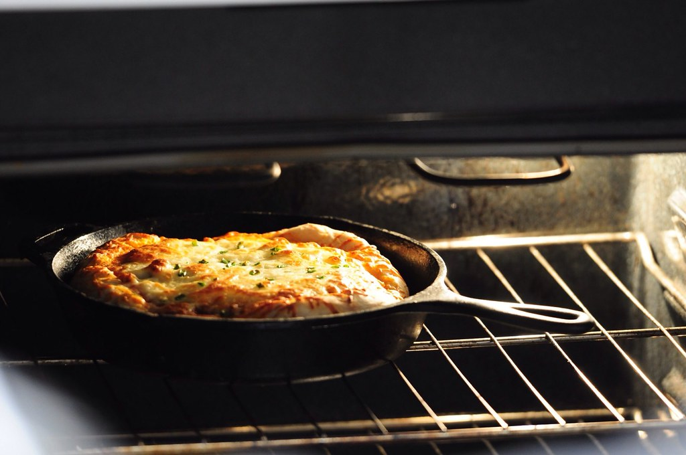

Cast Iron Pan Pizza

Description
You do not need a fancy pizza oven or stone to make an awesome pizza at home!
Using any dough of your choice, follow these simple steps and be enjoying delicious homemade pizzas at home in no time.
Ingredients
- Pizza dough of choice
- 4 tablespoons of tomato sauce
- 50g grated mozzarella cheese
- Large pinch of dry oregano
- 1 teaspoon of good quality extra virgin olive oil
- Other toppings of choice
Steps
- Preheat oven to 250°C.
- Meanwhile put the cast iron pan on the stove and turn on to its highest temperature.
- Stretch the dough to the rough size of your cast iron pan.
- Once pan is hot, place the dough into the cast iron pan.
- Working quickly spread the tomato sauce on the pizza, followed by your toppings of choice then the mozzarella cheese.
- Sprinkle over the oregano and drizzle with the olive oil.
- Place the cast iron pan into the oven for 10 minutes.
- Remove from the oven and remove the pizza from the pan as soon as possible to avoid burning the base.